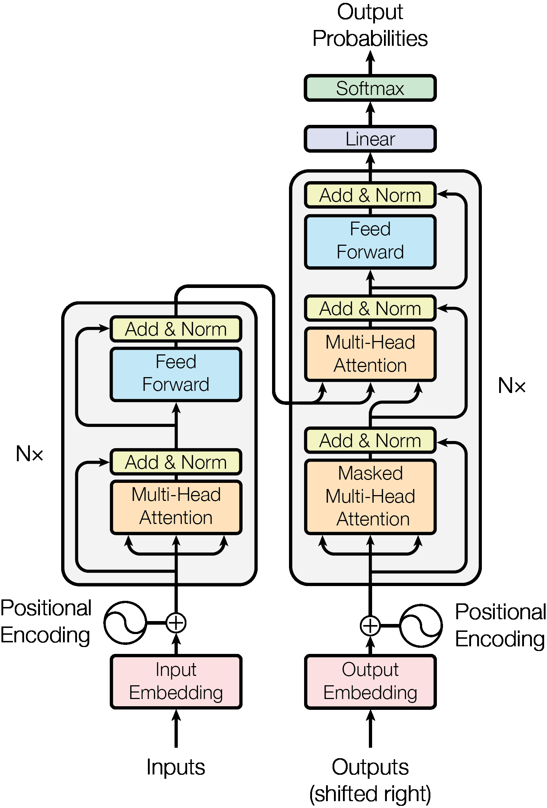

Attention Is All You Need¶
Link: https://arxiv.org/abs/1706.03762
Authors: Ashish Vaswani, Noam Shazeer, Niki Parmar, Jakob Uszkoreit, Llion Jones, Aidan N. Gomez, Lukasz Kaiser, Illia Polosukhin
Venue: arXiv:1706.03762 [cs.CL] (2017)
Model: claude-opus-4-6
Abstract¶
The dominant sequence transduction models are based on complex recurrent or convolutional neural networks in an encoder-decoder configuration. The best performing models also connect the encoder and decoder through an attention mechanism. We propose a new simple network architecture, the Transformer, based solely on attention mechanisms, dispensing with recurrence and convolutions entirely. Experiments on two machine translation tasks show these models to be superior in quality while being more parallelizable and requiring significantly less time to train. Our model achieves 28.4 BLEU on the WMT 2014 English-to-German translation task, improving over the existing best results, including ensembles by over 2 BLEU. On the WMT 2014 English-to-French translation task, our model establishes a new single-model state-of-the-art BLEU score of 41.8 after training for 3.5 days on eight GPUs, a small fraction of the training costs of the best models from the literature. We show that the Transformer generalizes well to other tasks by applying it successfully to English constituency parsing both with large and limited training data.
Summary¶
1. Abstract 요약¶
본 논문은 recurrence와 convolution을 완전히 배제하고 오직 attention mechanism만으로 구성된 새로운 시퀀스 변환(sequence transduction) 모델인 Transformer를 제안한다. 기존의 지배적인 시퀀스 모델들은 복잡한 RNN 또는 CNN 기반의 encoder-decoder 구조에 의존했으나, Transformer는 self-attention과 multi-head attention만을 사용하여 입력과 출력 간의 전역적 의존성을 모델링한다. WMT 2014 English-to-German 번역 태스크에서 28.4 BLEU를 달성하여 기존 최고 성능(ensemble 포함)을 2 BLEU 이상 초과했으며, WMT 2014 English-to-French 번역에서는 8개 GPU로 3.5일만 학습하여 41.8 BLEU의 새로운 single-model SOTA를 수립했다. 또한 English constituency parsing에도 성공적으로 적용하여 Transformer의 범용적 일반화 능력을 입증했다.
2. 한 줄 핵심 요약¶
Recurrence와 convolution 없이 self-attention mechanism만으로 구성된 Transformer 아키텍처를 제안하여, 기계 번역에서 SOTA 성능을 달성하면서도 훈련 비용을 대폭 절감했다.
3. Contribution¶
- 최초의 순수 attention 기반 시퀀스 변환 모델: RNN이나 CNN 없이 오직 self-attention만으로 encoder-decoder 구조를 구성한 최초의 모델(Transformer)을 제안
- Scaled Dot-Product Attention 및 Multi-Head Attention 메커니즘 도입: √d_k로 스케일링하는 dot-product attention과, 여러 개의 attention head를 병렬로 실행하여 다양한 표현 부분공간의 정보를 동시에 활용하는 multi-head attention 제안
- 기계 번역 SOTA 달성: WMT 2014 EN-DE에서 28.4 BLEU, EN-FR에서 41.8 BLEU를 달성하며 기존 모든 모델(ensemble 포함)을 능가
- 훈련 효율성의 극적 향상: 병렬화 가능성을 대폭 높여, 기존 최고 모델 대비 훈련 비용의 극히 일부만으로 우수한 성능 달성
- 범용적 일반화 능력 입증: English constituency parsing 태스크에서도 task-specific tuning 없이 경쟁력 있는 성능을 보임
4. Methods¶
핵심 아이디어¶
기존 시퀀스 모델(RNN, LSTM, GRU)의 본질적인 순차적 계산 특성이 병렬화를 방해하고 긴 시퀀스에서의 학습을 어렵게 만든다는 점에 주목하여, recurrence를 완전히 제거하고 self-attention으로 대체함으로써 모든 위치 간의 의존성을 상수 수의 연산(O(1) sequential operations)으로 모델링하면서 완전한 병렬화를 가능하게 한다.
모델 구조¶
- Encoder-Decoder 구조:
- Encoder: N=6개의 동일한 layer stack. 각 layer는 (1) multi-head self-attention + (2) position-wise feed-forward network의 2개 sub-layer로 구성. 각 sub-layer에 residual connection + layer normalization 적용
- Decoder: N=6개의 동일한 layer stack. encoder의 2개 sub-layer에 더해 (3) encoder 출력에 대한 multi-head attention sub-layer 추가. 자기 회귀(auto-regressive) 특성 보존을 위해 masked self-attention 사용
- Scaled Dot-Product Attention: Attention(Q,K,V) = softmax(QK^T / √d_k)V. d_k가 클 때 dot product 값이 커져 softmax의 gradient가 극도로 작아지는 것을 방지하기 위해 √d_k로 스케일링
- Multi-Head Attention: h=8개의 parallel attention head 사용. d_k = d_v = d_model/h = 64. Query, Key, Value를 각각 다른 학습된 linear projection으로 변환 후 attention 수행, 결과를 concatenate 후 다시 projection
- Position-wise Feed-Forward Network: FFN(x) = max(0, xW₁+b₁)W₂+b₂. 내부 차원 d_ff = 2048, 입출력 차원 d_model = 512
- Positional Encoding: 사인/코사인 함수 기반의 고정 positional encoding 사용 (PE(pos,2i) = sin(pos/10000^(2i/d_model)))
- 기타: embedding layer와 pre-softmax linear transformation 간 weight sharing, embedding에 √d_model 곱셈
데이터셋¶
- WMT 2014 English-German: 약 450만 문장 쌍, byte-pair encoding 사용 (공유 어휘 약 37,000 tokens)
- WMT 2014 English-French: 약 3,600만 문장, 32,000 word-piece 어휘
- Penn Treebank (WSJ portion): English constituency parsing, 약 40K 훈련 문장
- Semi-supervised setting: BerkleyParser corpora 포함 약 17M 문장
평가방법¶
- 기계 번역: BLEU score (newstest2014 test set), PPL (perplexity, development set newstest2013)
- Constituency Parsing: F1 score (WSJ Section 23)
- 훈련 비용: FLOPs (floating point operations) 추정
- Ablation study: attention head 수, key/value 차원, 모델 크기, dropout, positional encoding 방식 등 다양한 변형 비교
실험 결과¶
- EN-DE 번역: Transformer (big) 28.4 BLEU — 기존 최고 ensemble (GNMT+RL Ensemble 26.30) 대비 +2.1 BLEU 향상
- EN-FR 번역: Transformer (big) 41.8 BLEU — 기존 최고 single model 대비 SOTA, 훈련 비용 2.3×10^19 FLOPs (기존 GNMT+RL의 1.4×10^20 대비 약 1/6)
- Base model: EN-DE 27.3, EN-FR 38.1 BLEU, 훈련 비용 3.3×10^18 FLOPs (8 P100 GPU에서 12시간)
- Big model: d_model=1024, d_ff=4096, h=16, P_drop=0.3, 300K steps (3.5일), 213M parameters
- Ablation: single-head attention은 best setting 대비 0.9 BLEU 하락. 모델 크기 증가 시 성능 향상. dropout이 overfitting 방지에 효과적. sinusoidal vs learned positional encoding은 거의 동일한 결과
- Constituency Parsing: WSJ only 설정에서 91.3 F1, semi-supervised 설정에서 92.7 F1 달성
5. Findings¶
Objective Evaluations¶
- WMT 2014 EN-DE: Transformer (big) 28.4 BLEU vs 이전 SOTA ensemble 26.36 BLEU (ConvS2S Ensemble)
- WMT 2014 EN-FR: Transformer (big) 41.8 BLEU vs 이전 SOTA ensemble 41.29 BLEU (ConvS2S Ensemble), single model 기준으로는 압도적 SOTA
- 훈련 비용: base model은 기존 경쟁 모델 대비 수십~수백 배 적은 FLOPs로 더 높은 성능 달성
- Ablation에서 multi-head attention (h=8)이 single-head 대비 우수, 16개는 유사, 32개는 약간 하락
- Attention key 차원 축소 시 성능 저하 → dot product 이상의 정교한 compatibility function이 유익할 수 있음 시사
- English constituency parsing에서 task-specific tuning 없이도 대부분의 기존 모델을 능가 (Recurrent Neural Network Grammar 제외)
Subjective Evaluations¶
- Attention visualization 분석: 개별 attention head가 서로 다른 역할을 학습함을 확인
- 장거리 의존성 포착: "making...more difficult" 같은 먼 거리의 구문적 관계를 encoder self-attention layer 5에서 포착
- 대명사 해소(anaphora resolution): "its"가 "Law"에 attention하는 패턴 관찰 (head 5, 6)
- 문장 구조 관련 행동: 서로 다른 head가 문장의 구문적/의미적 구조와 관련된 다양한 패턴을 학습
- Self-attention이 더 해석 가능한(interpretable) 모델을 생성할 수 있는 부수적 장점 보유
6. Notes¶
의미¶
- 딥러닝 역사상 가장 영향력 있는 논문 중 하나: Transformer 아키텍처는 이후 BERT, GPT, T5, ViT 등 거의 모든 현대 딥러닝 모델의 기반이 됨
- 패러다임 전환: RNN/LSTM 중심의 시퀀스 모델링에서 attention 기반 모델로의 근본적 전환을 촉발
- Self-attention의 O(1) maximum path length가 장거리 의존성 학습을 근본적으로 용이하게 함
- 병렬화 가능성의 극대화로 대규모 모델 훈련의 실용성을 입증
- NLP를 넘어 vision, audio, multimodal 등 거의 모든 AI 분야로 확장됨
한계¶
- Self-attention의 계산 복잡도가 시퀀스 길이의 제곱에 비례 (O(n²·d)) → 매우 긴 시퀀스에 대한 확장성 문제
- Attention-weighted position의 평균화로 인한 effective resolution 감소 (multi-head attention으로 일부 완화)
- 기계 번역과 constituency parsing 외의 태스크에 대한 검증이 제한적
- Restricted self-attention (neighborhood 기반)에 대한 실험은 미수행, 향후 과제로 남겨둠
- Auto-regressive decoding의 순차적 특성은 여전히 존재
코드/데모¶
- 코드: https://github.com/tensorflow/tensor2tensor
7. Figures/Tables¶
Figure 1: The Transformer - model architecture.

Figure 2: (left) Scaled Dot-Product Attention. (right) Multi-Head Attention consists of several

(p.4)